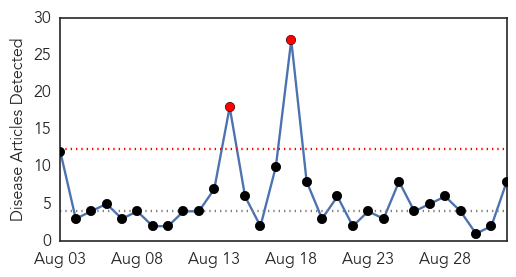
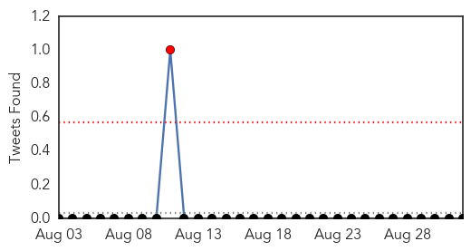
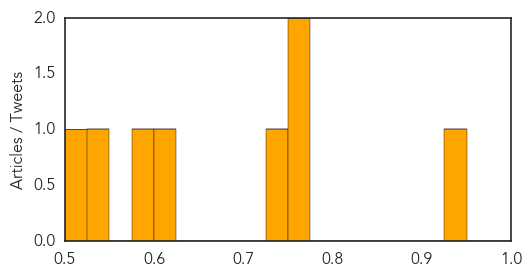
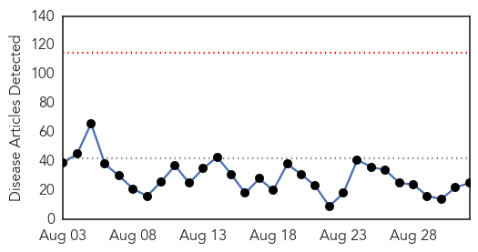
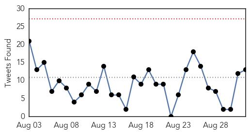
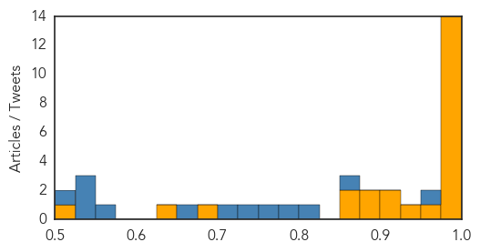

Meningitis
30-Day Web Trend
2 alerts, 0 warnings

30-Day Twitter Trend
0 alerts, 0 warnings

Article Locations

Article Confidences
Top Articles:
- 0.942
- Meningitis B vaccinations start across UK for all newborns
- 0.751
- Can flying make you ill?
- 0.751
- New vaccine to beat meningitis B baby killer
- 0.733
- Campaigner's delight at introduction of new vaccine to fight meningitis in newborn babies
- 0.608
- Babies in Northern Ireland to get new vaccine to combat one of the most lethal strains of meningitis
- 0.594
- Enough meningitis jabs for all university students
- 0.530
- Lake Forest schools working to comply with new state vaccine mandate
- 0.503
- Louisiana Department of Health and Hospitals (via noodls) / DHH Confirms Naegleria Fowleri Ameba in North Monroe Water System
Top Tweets:
-
No tweets found for Sep 01, 2015
Ebola
30-Day Web Trend
0 alerts, 0 warnings

30-Day Twitter Trend
0 alerts, 0 warnings

Article Locations

Article Confidences
Top Articles:
- 1.000
- Burundian refugee not killed by Ebola: Tanzanian gov't
- 1.000
- Vaccine trial expands to Sierra Leone due to new Ebola case
- 1.000
- VIRAL SIEGE: Ebola Fear Campaign & Cover-Up Masks Truth About Outbreak
- 0.999
- 50 people quarantined after new Ebola death in S Leone
- 0.999
- Liberia Again To Be Declared ‘Ebola Free’ By WHO
- 0.999
- Assessing Ebola Risk
- 0.998
- WHO Director-General addresses Institute of Medicine Ebola workshop
- 0.998
- MRU countries recommend information sharing
- 0.998
- New Ebola death in Sierra Leone
- 0.997
- 50 people quarantinee after new Ebola death in S. Leone
- 0.997
- 50 people quarantinee after new Ebola death in S. Leone
- 0.987
- Experts to investigate new Ebola case in north Sierra Leone
- 0.987
- 75 Health Surveillance Officers Recruited At The Airport of Mauritius
- 0.979
- New Ebola Death in Sierra Leone Sets Back Efforts to Beat Epidemic
- 0.969
- Unions Demand Liberian Government Account for Funds as Ebola Outbreak Nears End
- 0.949
- infectious diseases
- 0.924
- Nation Home
- 0.918
- The Need for Global Health Education in Medical Training
- 0.892
- “Waves of Grace”, a story told in Virtual Reality about Ebola survival and recovery
- 0.886
- African healthcare staff that fought the disease should be honored, says Ebola-hit Nurse
- 0.860
- Pres. Sirleaf : New dev't goals have African interest
- 0.860
- S/Leone: Officials urge schools to maintain Ebola prevention measures
- 0.692
- Children go back to school in Sierra Leone but hygiene safety measures remain in place
- 0.639
- MOHS Ends District Level Operational Post Ebola Recovery Plan Workshop - Sierra Leone
- 0.516
- Villagers Extol Addaxs WASH Programme amidst Ebola
Top Tweets:
- 0.969
- Sierra Leone: New Ebola death sets back efforts to beat epidemic - Yahoo News UK http://t.co/DVLI78IyYQ ebola EVD
- 0.967
- Margaret Chan: we deal with ~100 outbreaks per year, but the Ebola outbreak outstripped WHO's capacity. Warm-up for next flu pandemic? GHRF
- 0.956
- Sierra Leone News : Villagers Extol Addax's WASH Programme amidst Ebola - Awareness Times http://t.co/UXw5gNCGRa ebola EVD
- 0.955
- Nigeria v S. Leone moved after ebola fears - SuperSport (blog) http://t.co/HaaFVwn8ni ebola EVD
- 0.940
- SierraLeone: 50 personnes en quarantaine après un nouveau cas d'Ebola https://t.co/mfnnuH7eFG via
- 0.930
- Coverage of the Ebola Virus Disease Epidemic on YouTube http://t.co/J4lsLxdhBR
- 0.924
- Risk and insurance lessons learned from the Ebola outbreak of 2014 - InsideCounsel http://t.co/jO1S8IjVSp ebola EVD
- 0.854
- Ebola Virus Outbreak Investigation, SierraLeone, September 28–November 11, 2014 http://t.co/6JCdxyTZHR
- 0.850
- Local doctor to speak about Ebola clinics - Ithaca Journal http://t.co/yumxusTHet ebola EVD
- 0.824
- This Ebola Documentary Shows VR Film's Radical Potential - Wired http://t.co/Gg0VNQ2XvP ebola EVD
- 0.818
- Ebola: Where are we now? Guinea Liberia Sierra Leone http://t.co/373pntdz99
- 0.815
- RT: BaobabForum: Emotional personal story of the Ebola outbreak in Guinea by Dr Elhadhj Ibrahima Bah. @KoinangeJeff http://…
- 0.815
- Liberian Ebola survivor battles prejudice in UN virtual reality film - Reuters http://t.co/7XA3OPs8RU ebola EVD
- 0.805
- Liberian Ebola survivor battles prejudice in UN virtual reality film - Yahoo News http://t.co/i4bMLktTNz ebola EVD
- 0.795
- RT: New Ebola death confirmed in Sierra Leone - @bbchealth http://t.co/DrFHi1s29Y
- 0.768
- Biocontainment Unit Marks One-Year Anniversary of Ebola Treatment - WOWT http://t.co/MKC75PRPKp ebola EVD
- 0.750
- Ebola Lessonslearned from Liberia http://t.co/FF2iGZZpZc
- 0.645
- Academic Inst’ Guidelines for Health Care Workers Who Deploy to West Africa for the Ebola Resp and Future Crises http://t.co/o5LfedOUuO
- 0.640
- 1 Sept - news pouch on avianflu avianinfluenza Ebola EbolaResponse MERS is here: http://t.co/4sBOMdHvQ7
- 0.633
- Ebola vaccine yields first hopes of clinical efficacy - http://t.co/z2Rjnutn9L http://t.co/LqlAnTrFN7 ebola EVD
- 0.589
- 31 Aug - news pouch on avianflu avianinfluenza Ebola EbolaResponse MERS is here: http://t.co/Oyp32Acz47
- 0.570
- Live feed for GHRF meeting. Important topics, including: should WHO be leading outbreak response? If so, how? http://t.co/yabHovwNNb Ebola
- 0.540
- Assessing the Potential Role of Pigs in the Epidemiology of Ebola Virus in Uganda http://t.co/plLeUcj1oU